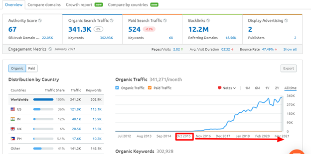
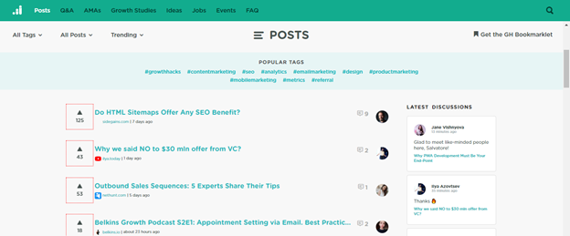
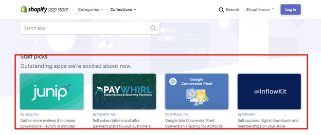
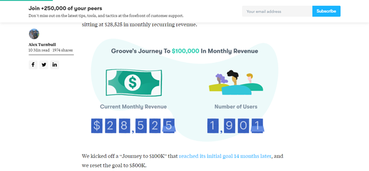
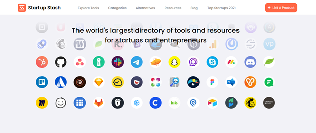

Side projects are fun and often made to scratch your own itch. They can consume hours of your time in the evenings and weekends while you iron out all the kinks.
For many, that’s where it ends. For others, their side project has the potential to help thousands or even millions of people. The only problem is that it’s not going to do that unless you put in the effort.
Unfortunately, that’s much easier said than done. This blog has already covered the main considerations for a side hustle to improve your chances of long-term success.
This guide will drill down into specific strategies you can use to market your side project, get those initial customers, and eventually scale to startup success. Even if that’s not your goal, I’m sure you’ll still find this guide useful. Let’s dive in.
How to market your side project?
Some of these side hustle marketing ideas may seem obvious or common wisdom but don’t take them for granted. The key with all of them isn’t to generate demand from scratch but to tap into existing demand. They’ve been used by some of the most successful organizations in the world to get initial traction and eventually scale.
SEO (search engine optimization)
SEO is first on this list for a reason. It takes the longest to start seeing results and, in many cases, it can produce more customers than any other channel. People love it so much because once it starts, it can go on indefinitely without much additional input.
Climbing the SERPs is the hardest part. If you search how to do SEO online, there are countless articles, videos, and even business courses that cover the topic. Yes, it can be complicated but not as difficult as it’s made to seem.
There are a few main pillars of SEO (not everyone will agree with me but I speak from personal experience).
1. On-page SEO
This is a broad term that encompasses many things such as the keywords you target, the way you structure your pages with those keywords and their LSI, and the overall user experience (how easy the page is to navigate, speed, etc.). Focus on creating great content to get on-page SEO right.
2. Relevance and intent
Page optimization goes beyond stuffing keywords throughout the content. What you write about should match the intent of the searcher. For example, a post title ‘best protein powders’ shouldn’t only talk about your protein powder.
Another thing to consider is your entire website relevant to that topic? If you’re a marketing website and start talking about how to groom pets, it doesn’t matter how good the content is, search engines probably won’t rank because it’s not relevant to the core topic of the website.
3. Link building
If you want to rank in search engines, you’ll have to build links from other authoritative websites in a relevant niche. This is how Google and other search engines determine the quality of your content and the authority of your website.
When done well, you can have explosive results that translate into revenue but it takes time to see those results.

In the image above, it took the brand roughly three years to get to 100,000 visitors a month then another three years to get to 340,000+ monthly visitors. Today, search engines are responsible for the majority of its traffic and revenue.
Most people don’t have a few years to wait around before they start getting results so there are other methods that come into play.
Get active in niche communities
Forums and other niche communities are often overlooked as viable marketing channels because it’s all about scale and traction these days. Niche communities can deliver all of that and more.
Before someone signs up for a fashion forum, car forum, business forum, etc. you can bet that they’re more interested in most. They want to interact with like minds, trade war stories, and grow any way they can.
You can get active within niche forums and position yourself as an authority while growing your side project. There are a few things to keep in mind.
- Choose the top three forums in your niche in terms of members and activity.
- You should post regularly and build clout before mentioning your product
- Your product/service should only come up when it’s relevant to the comment or thread.
- If the community offers a signature, optimize it with a link back to your website

In the end, forum marketing through niche communities follows the rules of decency. You don’t want to spam your link, be sure to add value, and post as often as you can. If you can dedicate 20 – 30 minutes a day to this strategy then you’ll start to get results.
Integrate with popular app/service directories
If you were building a company that absolutely had to replace your day job, I would hesitate to recommend using integrations as a primary growth driver. It puts you at risk from the platform you’re using.
The platform could decide to delist you, change its policies so you’re no longer relevant, or build a competing feature. With that being said, it can get you traction early. If you’re featured at the top of an app directory for a popular platform like Shopify, you may get tens of thousands of views a day.

As long as your side hustle gives people what they’re looking for, that can translate into hundreds of new customers. These customers are essentially free so you’re even more profitable than if you used other acquisition channels.
The first step is to identify the platforms that will give you the most bang for your buck. This will depend heavily on the type of project you have.
For example, if you’re offering email marketing consulting services, you may want to get certified as a Mailchimp expert. You then have the option of being listed in its service directory.
If you create a business application, the following directories may be a great option.
- Slack
- Webflow
- Salesforce
- Shopify
The key here is to find two or more relevant app or service directories from well-known organizations. All you need are a few customers from these channels every day or week for it to be worth it.
Document your journey publicly
Radical transparency is difficult to do. Sharing the entire journey of your side hustle publicly, including the wins and losses, can be daunting. It’s the losing part that makes transparency so hard because we often put winners on a pedestal.
Here’s a truth many people don’t realize. When you share your journey, it gives your side project a human face and will attract people to your brand. If they feel you’re authentic, they’ll root for you and support you in any way they can.
The support usually comes in the form of buying what you’re selling. Even if it’s not 100% ready or even if it’s a little more expensive.
The movement to be radically transparent is often referred to as open startups and many organizations have taken this route.
The founder of Groove, Alex Turnbull blogged his company’s entire journey from 0 to $100,000/m in revenue.

Then, he blogged about it from $100,000/m to $500,000/m. Then, he blogged from $500,000/m to $10,000,000/year. At every step, he had people rooting for him.
In fact, when he stopped sharing so much of their journey because he thought it wouldn’t be interesting to most folks, his fans rebelled. They demanded more.
While you may not have results as amazing as Groove, you can still build goodwill and remain top of mind. When your reader needs a product like yours, they’ll buy it from you or, at least, recommend it to a friend, colleague, or family member.
You can spend an hour or two a week recapping your progress, the next steps, and sharing it in key places.
Create a niche resource
What is something you can make that’s relevant to your target audience but doesn’t have to be directly tied to your core project?
Let me give you an example, if you serve an audience of social media managers, you could put together a collection of the best social media tools. It’s relevant to them but may not be directly related to your product or service.
Even though that’s the case, your brand will still get visibility and a few people may decide to purchase. Niche resources can be a small tool like a headline analyzer, a PDF converter, or a well-designed collection of the best vendors for a certain outcome.
Whatever you choose, make sure it’s relevant.

Startup Stash is a collection of hundreds of tools in dozens of categories that caters to startups. It started as a resource that helped the creator sell their own services. Eventually, it took on a life of its own.
You don’t have to go as far as this. Something as simple as a calculator may be enough to generate interest from your target audience.
Just make sure it’s:
- Simple to use
- Solves a small but clear problem
- Doesn’t take much time or energy to maintain
Summing up
Side projects or side hustle is the new black. More and more people are jumping on the train so there’s increases competition in almost every vertical. Don’t be discouraged. Focus on promotional methods that have worked and will continue to work.
When done well, you’re able to grow your side project into something more tangible and have the option of going full time.
About the Author
Luke Fitzpatrick has been published in a variety of publications such as Forbes, Tech In Asia and The Next Web. He is also a guest lecturer at the University of Sydney, lecturing in cross-cultural management and the pre-MBA program.
ajay says
Really, it’s great knowledge for beginners. Who just want to start their work, just read your article he/she start a great journey.
Elaina M says
Glad to hear you appreciate it, for sure a lot will benefit from it.